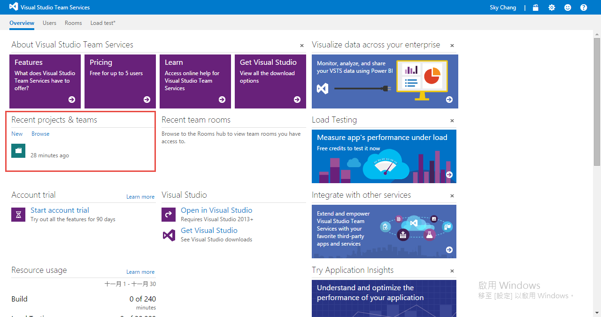
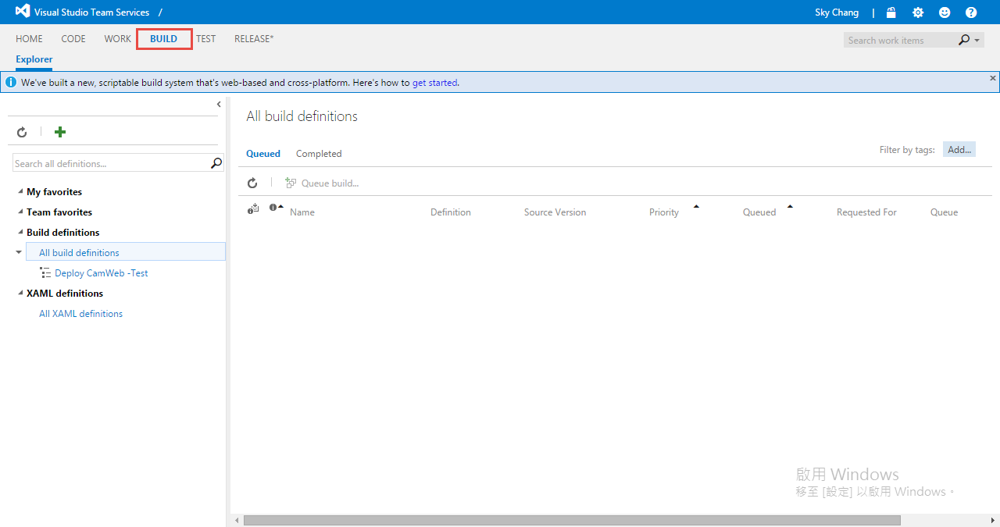
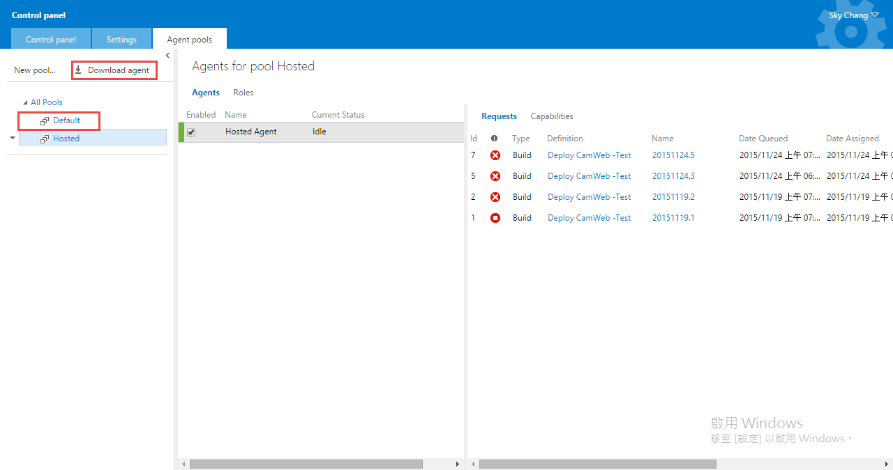
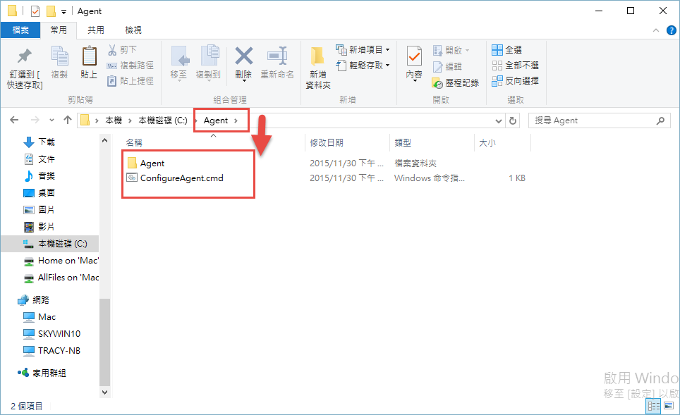
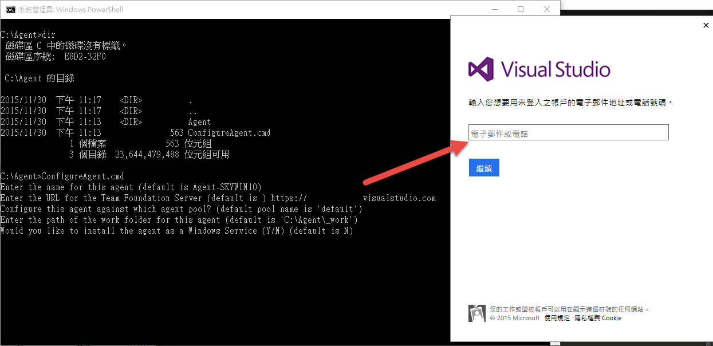
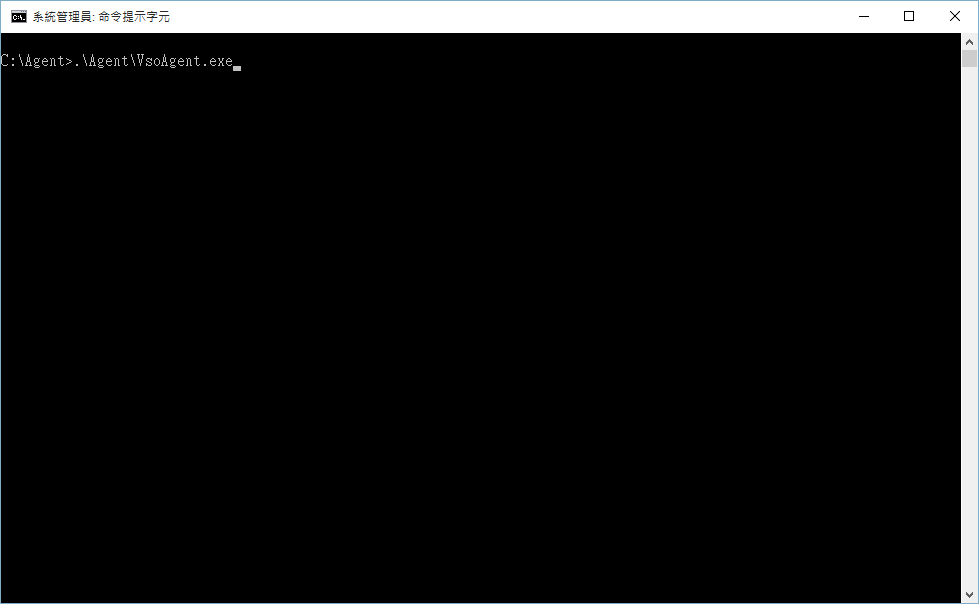

前言
很久很久以前，版本控制是一種奢侈 XDD ，因為要使用版本控制，不是自己養一隻小烏龜，要不然就是要在公司準備很多台機器裝 TFS ，而隨著 Service 時代的覺醒，版本控制已經是隨手可得的一件事情，也變成寫 Code 的一種呼吸~
而最近這個時代，隨著 App 的興起，DevOps 也開始流行起來，除了快速的把 Code 簽入到版本控制外，緊接著，持續整合 ( CI ) ，持續佈署 ( CD )，測試，回饋也緊接著而來。
其實 VSO 時代就提供了 Build 這個功能，透過自動 Build ，簽入的 source code ，可以自動的發佈到 Azure Cloud Service、 Web Site 等等，但用過的也知道，除了費用上的考量外，慢…也是極大因素…除此之外，對於 Node.js 等等，也不是那麼的友善。
P.S 舊版的 Build ，官方稱為 Build(XAML) ，預計 2016 年 停止使用。
但隨著新 CEO 上任，MS 的態度也和以前不一樣，現在新版的 VSTS 更是強大，對於其他語言的支援也越來越豐富!!
而這篇，就先來探討，該怎樣使用新的 VSTS Build !!
為什麼需要 Build ?? 又為什麼要 CI 和 CD ??
以前我們談到 CI ，是因為在 C# 這種需要編譯的語言，需要確保每次簽入進去的 Code 都是可以正常編譯的，這樣才能確保其他人取出來的時候，可以正常的執行。
大家或許會覺得納悶，怎麼可能會有不能編譯的狀況…；其實這種狀況還滿多的，例如以前沒有 NuGet 的時代，引用了第三方的 dll ，但 dll 沒有簽入進去…又或者是遇上了超強隊友，下班的時候，不管三七二十一，立馬簽入進去當作備份，這些都是小弟遇過的真實案例…
而持續整合 CI 的目的，就是持續不斷的 Build ，讓我們的 Code 能維持正常的狀況…
當然，CI 後面，可以搭配自動化測試 ( 自動 Run Unit Test )，甚至 CD ( 持續佈署 ) 到測試環境，然後再接著執行整合測試。
或許又會有人問，那 Release Management 勒?..
目前小弟自己對於 RM 的定位，是當整個開發 Team 測試完成，要正式放到預備環境，這時候就可以搭配 VSTS Release Management 了，不過目前來說，我們先做前面這段吧~~
Build Agent
首先，在開始之前，我們必須要有一台 Build 的機器，來為我們進行編譯或是下載 npm 等等的動作，而這台就是 Build Agent…
是的，大家或許會困惑，但你沒看錯…
為什麼要一台 Build Agent ? VSTS 不是已經提供了嗎!!??
以下會介紹幾種狀況
VSTS 提供的 Build Agent 不夠新；VSTS 是有提供 Build Agent ，但上面的軟體並非最新的，舉例來說，寫這篇文章的時候，上面的 Node.js 還是 0.10 版本，但是小弟我自己已經用了 5.0.0 版本，這時候用上面的 Build Agent 會有問題的。
Source 來源為 GitHub…；根據官方的文章寫到… “If you don’t have a build agent, set up a Windows agent or an Xplat agent.”，所以若你是使用 GitHub ，則需要自行架設… ( 但小弟抱持著懷疑的態度…小弟主要是碰上版本問題，才自行架設的…有興趣的朋友可以試試看 )
你已經用了一台官方的 Build Agent ，但你又不想付費，但又要多一台 Build Agent。
所以結論是甚麼??，如果你是使用 VSTS 當作版控，而官方的 Build Agent 內含的軟體又包含你要的 ，你就可以直接使用官方的 Build Agent 。
但如果沒有滿足條件，或是想在自己的電腦上當作 Build Agent，就必須自己架設 Server 了。
但大家也不用太擔心，未來官方一定會完整支援的。
( 所以綜合以上狀況，小弟還是自己開了一台 Azure VM 來當作 Build Agent… )
另外，如果已經裝了 TFS ，則內建也會有 Build Agent
Build Agent Server 裡面要裝甚麼!!?
你用到甚麼，就裝甚麼…，如果你要 Build C# ，就裝 VS 2015 吧…若你要 Build Node.js ，請記得裝 Node.js ，若你還要發送到 Azure ，也別忘了裝 Azure PowerShell，此外，必要條件還有 PowerShell 3.0。
( 如要知道目前你使用的 PowerShell 版本，可看這裡)
我要怎樣知道官方的 Build Agent 有裝甚麼??
請參考官網
我可以用 Linux , Mac 當 Build Server 嗎?
答案是. “可以” !! ，目前除了官方也提供了 Node.js 版本的 Build Agent XPlat
所以你要在別的平台裝 Build Agent ，則要先裝 Node.js 和 npm 喔!!
我可以裝多台的 Build Agent 嗎??
可以，但是預設只能有一台，要多台，就要付錢，可以參考這裡
所以到底有幾台免費 ?
官方提供一台 Build Agent ，你也可以自己建立一台，所以免費的情況下，最大兩台
我很有錢，我要怎樣付錢
請透過 Azure Portal 進行連結 VSTS 後，透過 Azure Portal 進行付款
我有看到 Build(XAML) 那和這個有甚麼不同
Build(XAML) 是舊版的 Build 機制，以前是依據 Build 的時間收費，而新版則是依據 Agent 台數收費，此外，底層架構也完全不同了。
接下來，這篇我們就先以 Windows Server 平台為主。
VSTS 專案
當 Windows Server 都準備好後，我們就要從 VSTS 專案開始，如下圖。

然後進入 Build 就可以看到以下畫面.

若我是用 GitHub 也需要建立 Team 專案嗎?
是低，一定要先開 Team 專案，才能使用 Build 。
這個 Team 專案裡面沒東西也可以使用 Build 嗎?
是低，裡面沒任何的 Source Code ，Work Item ，你也可以使用 Build ，只是你必須要先有一個專案。
安裝 Windows Agent
當一切準備就緒，我們就可以到
1 | https://{your_account}.visualstudio.com/_admin/_AgentPool |
下載 Agent 軟體，如下圖，我們可以直接點 Download Agent 來下載；另外，要特別注意底下的 Default ，等下我們會需要輸入 Default 這個 Agent Pool 名稱。

下載檔案到 Server 後，只需要解開壓縮即可，官方建議直接丟在 C:\Agent 底下，以防路徑過長問題，如下圖，我們可以看到 C:\Agent 底下有解開壓縮的檔案。

接下來，當然不是點兩下，( 不要衝動阿!!! )，而是要使用 cmd ( administrator 權限 )
來執行 configureAgent.cmd；這時，會問幾個簡單的問題。
基本上，大概只有網址要填寫，其他地方都不用填，用預設的就可以了。
1.預設 Agent 的名稱
2.TFS or VSTS 的網址
3.Agent Pool 的名稱 ( 就是上一個步驟看到的 Default )
4.路徑
5.是否要將 Angent 變成一個 Windows Service ( 小弟自己是不喜歡…所以是選 N )
輸入完之後，會跳出登入畫面，輸入帳號密碼後，就完成安裝了!!

安裝完成後，要啟用這個 Build Agent 只要如下圖輸入
1 | .\agent\vsoAgent.exe |
即可，但請注意，一定要在 agent 的目錄下輸入，如下圖。

完成之後，你的 Build Agent 就準備好了!!!
後記
下一篇，針對 Node.js 進行設置。
( 如文章內容有誤，請告知小弟~ 謝謝)